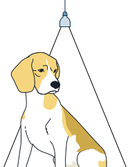
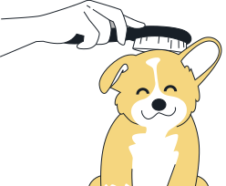
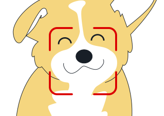

비문등록 방법

주변 조명을 확인해주세요
밝고 균일한 조명에서 촬영하면 더욱
정확하게 등록할 수 있어요. 너무 어둡거나
강한 빛이 반사되는 곳은 피해주세요

얼굴 상태를 확인해주세요
비문이 잘 보일 수 있도록 털을
살짝 정리해 주시고, 빛 반사로
흐려지지 않도록 주의해주세요

정면에서 촬영해주세요
반려동물의 코가 정면에서
또렷하게 보이도록 가까이서 찍어주세요
초점이 맞춰져 있으면 더욱 좋아요!
다시 보지 않기
이전
다음